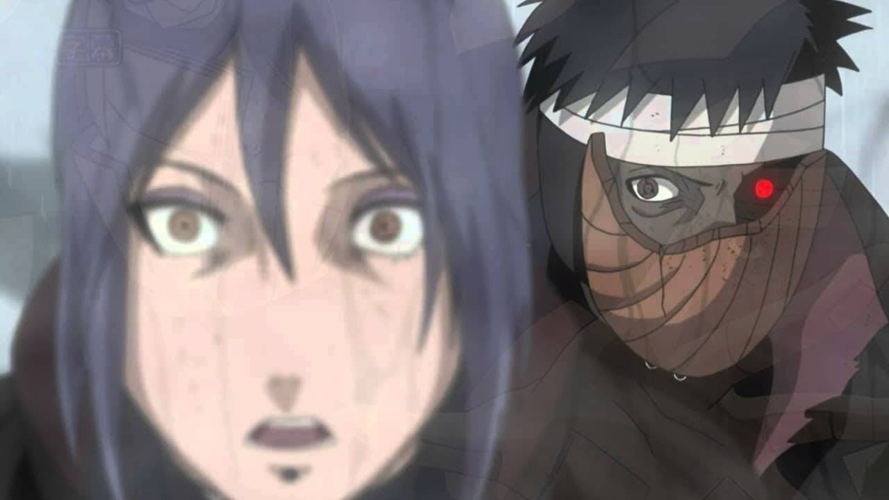

Tribute to Obito

Obito vs Konan: After spending all chakra in his final move, Konan is
surprised by Obito's survival
Quotes
- To KakashiThose who break the rules are trash, but those who abandon their comrades are worse than trash! If I'm going to be called trash either way, I'd rather break the rules! And if that somehow makes me anything less than a real shinobi, then I'll crush all of the so-called "real" shinobi!
- To KakashiI'm about to… die… but I'll become your eye… and see the future with you.
- To Pain and KonanThe true power of the Sharingan… this is Madara Uchiha's power!" (写輪眼の本当の力が… このうちはマダラの力が!, "Sharingan no hontō no chikara ga… kono Uchiha Madara no chikara ga!
- Thinking to himself about SasukeThe moment people come to know love, they run the risk of carrying hate.
- To Naruto and Killer BI'm no one… I don't want to be anyone. All I care about is completing the Eye of the Moon Plan. This world is completely worthless… there is nothing left in it but misery.
- Thinking to himselfYou remind me of myself… Naruto… yeah… just like when I was young… but, that'll all change with time…
- To KakashiLook! There is nothing in my heart! I don't even feel pain!! You don't have to feel guilty, Kakashi. This windhole was opened by this hell of a world.
- To MadaraNow I finally realised that faking one's name and letting others do everything for you is different than entrusting something to one's comrades. I'm not you. The current me is the one who wanted to become Hokage: Obito Uchiha!
- Last words, to NarutoYou'll probably have to suffer again from now on… but don't change, keep going your way. You told me that you never change your words… that's your ninja way. Right? Naruto, become Hokage… at all costs.